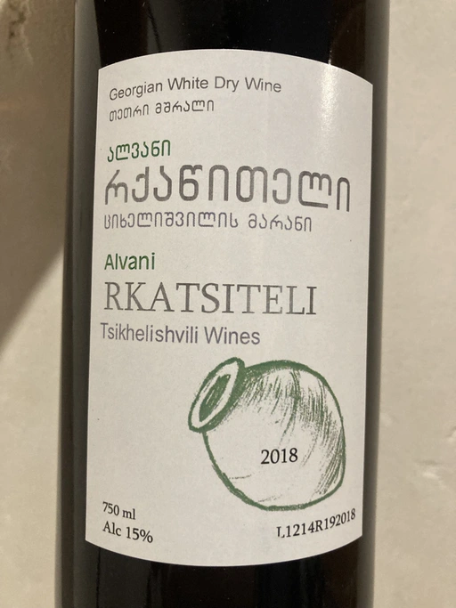
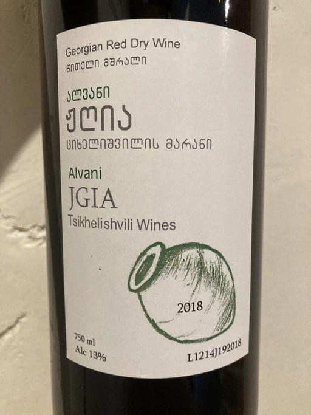
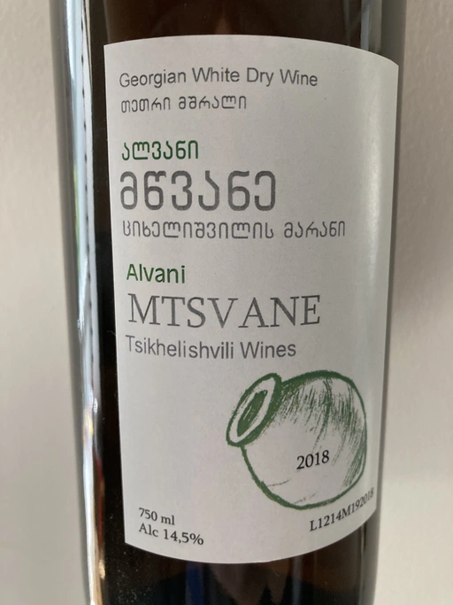
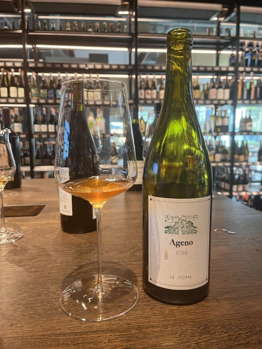
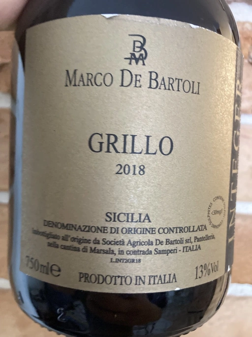
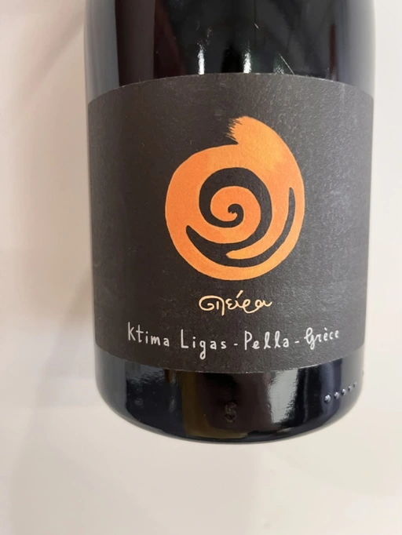
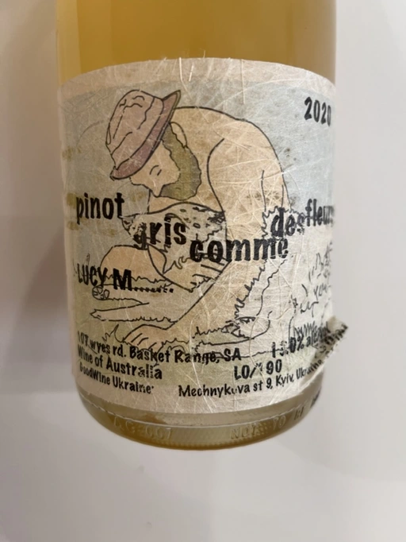
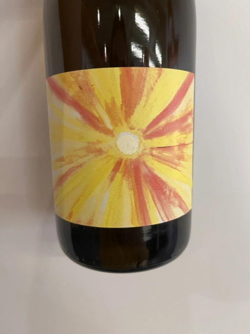
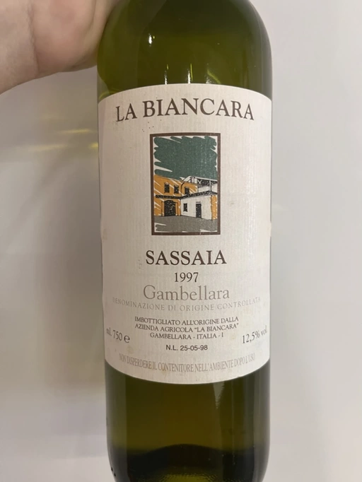
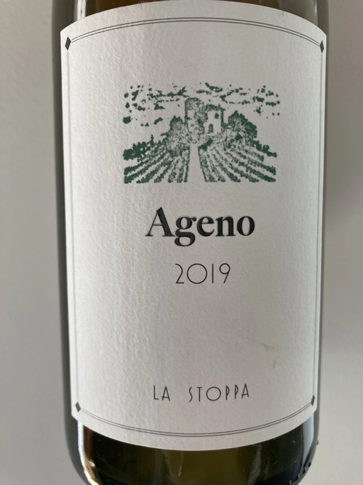

- Type
- White Still, Dry
- Producer
- Tsikhelishvili Wines
- Vintage
- 2018
- Location
- Georgia, Kakhetia
- Grapes
- Rkatsiteli
- Alcohol
- 15
- Sugar
- 2.67
- Price
- 690 UAH
- Cellar
- N/A
Producer
Small producer from Kakhetia. Cultivates Rkatsiteli, Mtsvane and almost extinct Jgia. All wines are hand made. Uses qvevri, of course. Annual production is less than 5000 bottles.
Ratings
2022-07-28 - 8.20
Rustic wine with an absurdly powerful palate that knocks you down and then keeps kicking your kidneys. And this is despite me opening the bottle roughly 7 hours before tasting. Not sure, what’s wrong with me, but I love it. Deep Madeira-like colour. Nose full of persimmon, apricot, VA, and nut husk. Juicy, but not for everyone in this stage. Has potential for sure. It would be interesting to taste it again in 5+ years.
Wine #4 on Mixed Bag Vol. 2: Orange.
Related

Tsikhelishvili Wines
Jgia - 2018

Tsikhelishvili Wines
Mtsvane - 2018

La Stoppa
Ageno - 2018

Marco De Bartoli
Integer Grillo - 2018

Ktima Ligas
Spira - 2019

Lucy Margaux
Pinot Gris Comme de Fleurs - 2020

Gentle Folk
Summertown blanc - 2019

La Biancara
Sassaia - 1997

La Stoppa
Ageno - 2019